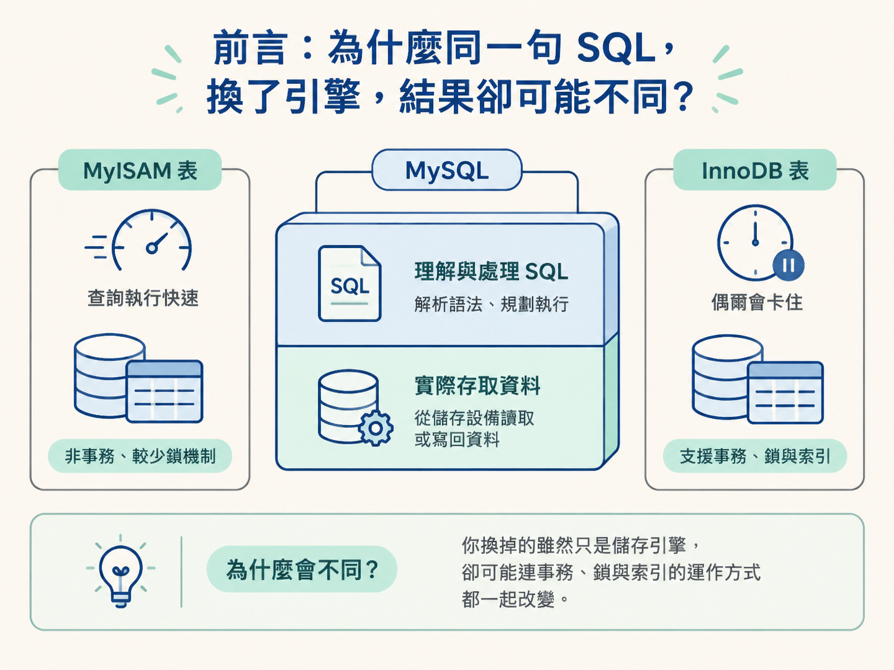
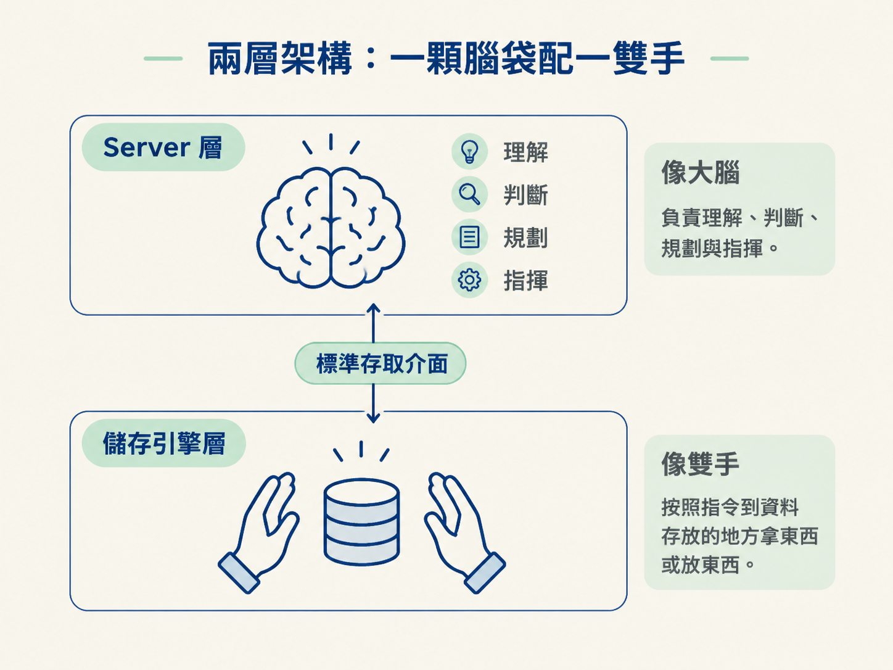
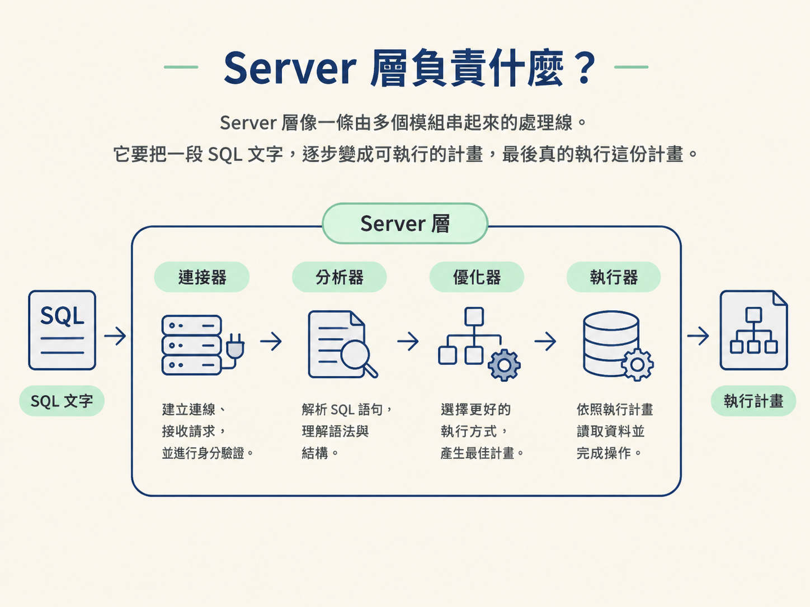
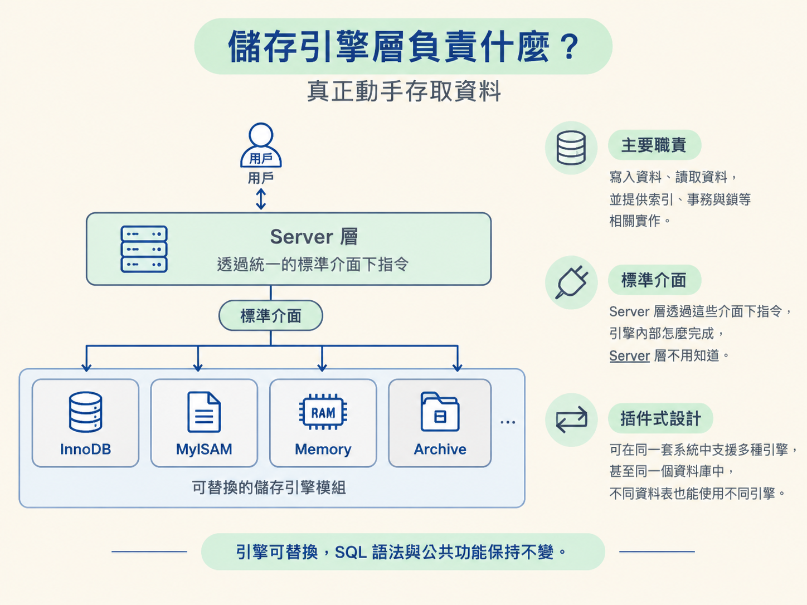

你寫了一句 SELECT * FROM orders WHERE id = 100，在測試機的 MyISAM 表上跑得飛快；換到正式機的 InnoDB 表，同樣的語句卻偶爾卡住。更奇怪的是，兩張表使用相同的 SQL 語法、同一份連線資訊，甚至是同一個 MySQL 版本。語法沒變、連線沒變，為什麼行為還是會不同？
答案藏在 MySQL 的分層設計裡：MySQL 把「理解與處理 SQL」和「實際存取資料」拆成兩層。上層負責看懂這句 SQL、規劃怎麼執行；下層才真的把資料從儲存設備讀出來，或把資料寫回去。你換掉的雖然只是儲存引擎，卻可能連事務、鎖與索引的運作方式都一起改變。

搞懂這兩層的分工，你才知道遇到問題時該往哪一層查，也才能看懂後面關於事務、鎖與索引的追問。
MySQL 大致可以分成兩層：上層是 Server 層，下層是儲存引擎層。如果用身體來比喻，Server 層像大腦，負責理解、判斷、規劃與指揮；儲存引擎層像雙手，按照指令到資料存放的地方拿東西或放東西。

兩層之間透過一組標準的存取介面溝通。因此，Server 層不必知道資料究竟存在哪裡，也不必知道底層用什麼資料結構保存。只要引擎遵守這組介面，就能接上 MySQL。
這個分工可以先記成一句話：凡是跟「怎麼理解與執行 SQL」有關的事，交給 Server 層；凡是跟「資料實際怎麼存、怎麼讀寫」有關的事，交給儲存引擎層。
這樣拆開之後，MySQL 才能在同一個資料庫系統裡支援多種儲存引擎。換了底層引擎，SQL 語法與大部分公共功能仍然可以維持不變。
Server 層像一條由多個模組串起來的處理線。它要把一段 SQL 文字，逐步變成可執行的計畫，最後真的執行這份計畫。

客戶端要和 MySQL 溝通，第一步是建立連線。連接器負責處理 TCP 連線、驗證帳號密碼，並查出這個使用者擁有哪些權限。
連線建立之後，這份權限通常就固定在該連線上。即使管理者在另一邊修改了使用者權限，已經建立的連線也不會立刻套用新設定，通常要重新連線才會生效。連接器也會管理最大連線數，以及空閒連線可以維持多久。
連線建立、拿到 SQL 字串之後，分析器要先弄清楚：「這句話到底想做什麼？」
它會先進行詞法分析，把整串文字切成一個個詞，也就是 token，並辨認哪些是關鍵字、哪些是表名、哪些是欄位。接著進行語法分析，檢查這些詞的排列方式是否符合 SQL 文法。
如果語法本身就寫錯了，你看到的 You have an error in your SQL syntax，就是在這個階段被發現的。這時還沒走到索引，也還沒開始讀資料，因為 SQL 連「句子結構」都還沒有通過檢查。
語法確認沒問題後，優化器接手。同一句 SQL，通常不只有一種執行方式。例如，資料庫可能有好幾個索引可以選，也可能需要連接多張表，而不同的連接順序會造成不同的成本。
優化器會根據統計資訊，估算各種方案的成本，然後選出它認為最划算的一條路，產出執行計畫。你熟悉的 EXPLAIN，看的就是優化器最後選定的計畫。
這裡有一個容易混淆的地方：優化器只負責「決定怎麼做」，不負責真的搬資料。真正呼叫儲存引擎、取得資料的是後面的執行器。
執行器拿到執行計畫後，才開始真正執行。它會先再做一次權限檢查，確認這個連線對目標資料表確實擁有查詢權限。
接著，執行器按照計畫一步一步呼叫儲存引擎提供的介面，把符合條件的資料逐行取回來。如果你開啟慢查詢日誌，裡面記錄的掃描行數，主要就是在這個執行過程中累積出來的。
在 MySQL 8.0 之前，分析器之前還有一個查詢快取。它會把整句 SQL 文字當成 key，把查詢結果當成 value。下次收到完全相同的語句時，就能直接回傳快取結果，不必重新解析與執行。
問題是，只要任一張相關資料表被寫入，這張表的查詢快取就可能全部失效。資料一旦經常變動，快取命中率就很難維持，這項機制也因此不太實用。MySQL 8.0 直接移除了查詢快取。
所以現在談到「快取」，通常是在說應用層的 Redis，而不是這個已經不存在的 MySQL 查詢快取。
除了處理 SQL 的幾個模組，Server 層也負責許多跨儲存引擎的公共能力，例如內建函數、預存程序、檢視表與觸發器。
這些功能由 Server 層統一實作，帶來的好處是：不管底層使用 InnoDB 還是 MyISAM，功能的基本行為都能保持一致，不必每個儲存引擎各寫一份。
換句話說，儲存引擎可以把注意力集中在「資料要怎麼存、怎麼讀、怎麼寫」這件事上，而不必同時負責整套 SQL 語言與公共功能。
儲存引擎層的職責單純得多：把資料寫進儲存設備、從儲存設備讀出來，並在上層需要時提供索引、事務與鎖的相關實作。
它對外提供一組標準介面，Server 層透過這些介面下指令。至於引擎內部要怎麼完成，Server 層不用知道。這就像餐廳服務生只要把點單送進廚房，不需要知道廚師使用哪口鍋、怎麼安排爐火。
這種「上層定義介面、下層可以替換」的設計，叫作插件式儲存引擎。它讓 MySQL 能夠在同一套系統裡支援多種引擎，甚至同一個資料庫中，不同資料表也可以使用不同引擎。

| 引擎 | 主要特性 | 常見用途 |
|---|---|---|
| InnoDB | 預設引擎，支援事務與行級鎖，採用聚簇索引 | 絕大多數線上交易表 |
| MyISAM | 不支援事務、使用表級鎖，索引與資料分開存放 | 少數只讀或統計場景 |
| Memory | 資料放在記憶體中，重啟後資料會遺失 | 暫存表、需要極快查詢的場景 |
| Archive | 高壓縮，只支援插入與查詢 | 日誌歸檔 |
第一個好處是職責單一。SQL 的理解與規劃交給 Server 層，資料的實際存取交給儲存引擎層。兩邊各自處理擅長的事，修改其中一邊時，也比較不容易牽動另一邊。
第二個好處是可以替換。只要新的儲存引擎遵守相同的介面，就能接進 MySQL。選擇儲存引擎因此成為一個獨立決策，不需要為了更換資料存取方式，就把整個資料庫系統砍掉重做。
第三個好處是公共能力可以統一實作。內建函數、預存程序與檢視表等功能只需要由 Server 層處理一次，所有儲存引擎都能使用。
回到一開始的情境：同一句 SQL 在兩台機器上表現不同，語法可能完全沒有問題，差別往往在底層儲存引擎的實作。只要記住「Server 層管怎麼算，儲存引擎層管怎麼存」，你就能先判斷問題應該往哪裡查。
MySQL 可以分成兩層：Server 層負責連線、解析、優化與執行，也就是負責「動腦」；儲存引擎層負責資料的實際存取，也就是負責「動手」。兩層透過標準介面溝通，因此儲存引擎可以插件式替換，而 SQL 語法與公共功能仍能維持一致。
InnoDB 是目前的預設引擎，也是最常使用的引擎；MyISAM 則主要留在少數特殊場景。把這張架構圖記住，下一步就能接上時間軸，看看一條 SQL 究竟會按照什麼順序穿過這些關卡。